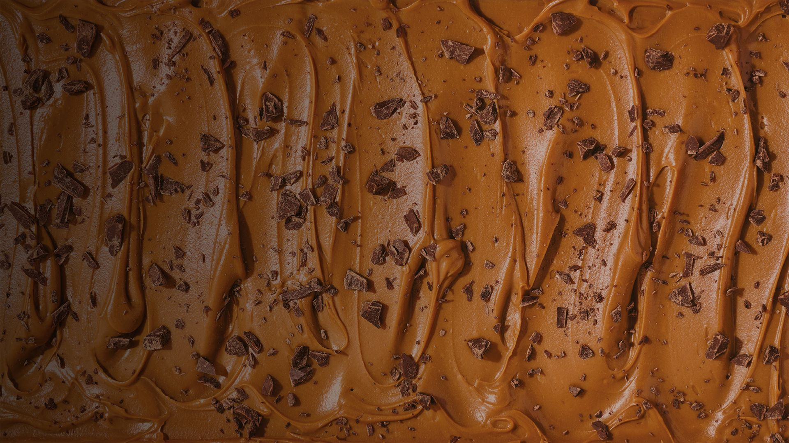

Helado de dulce de leche

Ingredientes:
- 500g de dulce de leche (que no sea repostero)
- 250g de crema de leche
- 250g de leche
¿Cómo prepararlo?!
- Mezclar de a poco en un bol el dulce de leche con la crema de leche. La crema tiene que estar líquida, sin batir. Batir hasta unir bien.
- Agregar la leche (llená el pote de crema que te quedó vacío, de leche) e integrá bien.
- Llevar el bol al freezer por 2-3 horas.
- Cuando tome consistencia, desintegralo y batilo bien de nuevo. Llevar otra vez al freezer.
- Esta operación yo la repito un par de veces para que quede bien cremoso. Podés ponerle chocolate picado, nueces, almendras, etc.